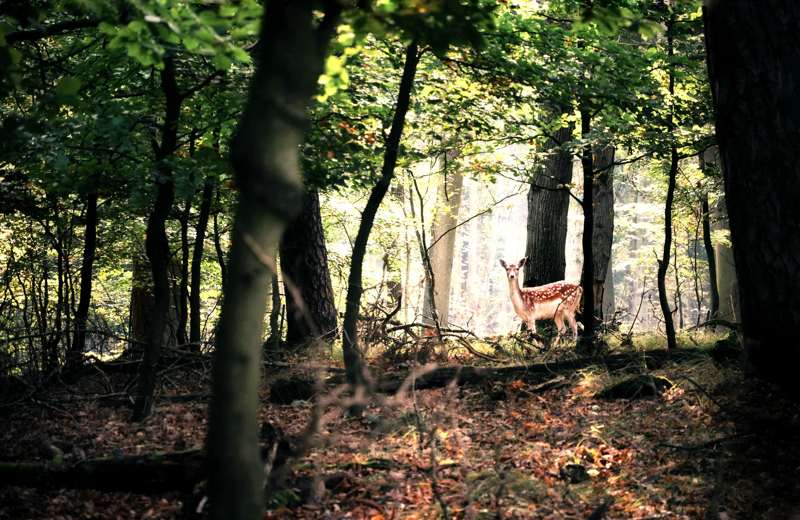
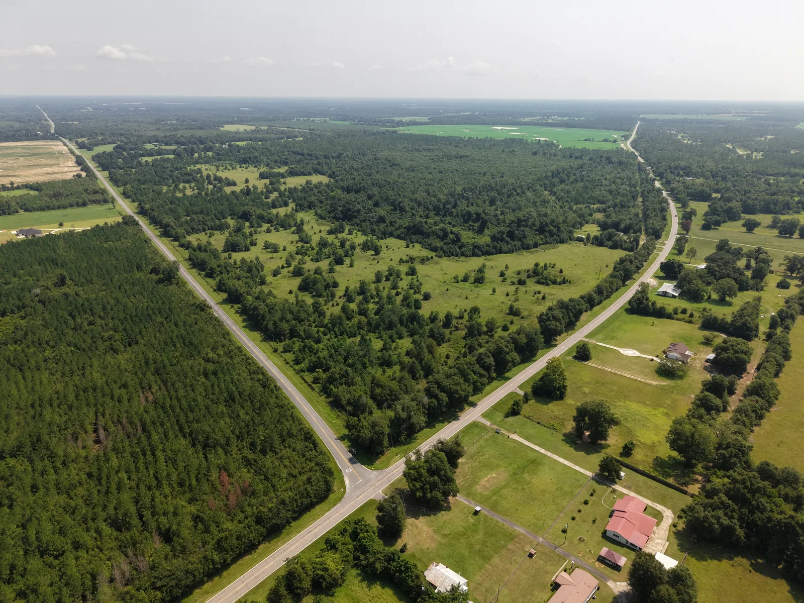
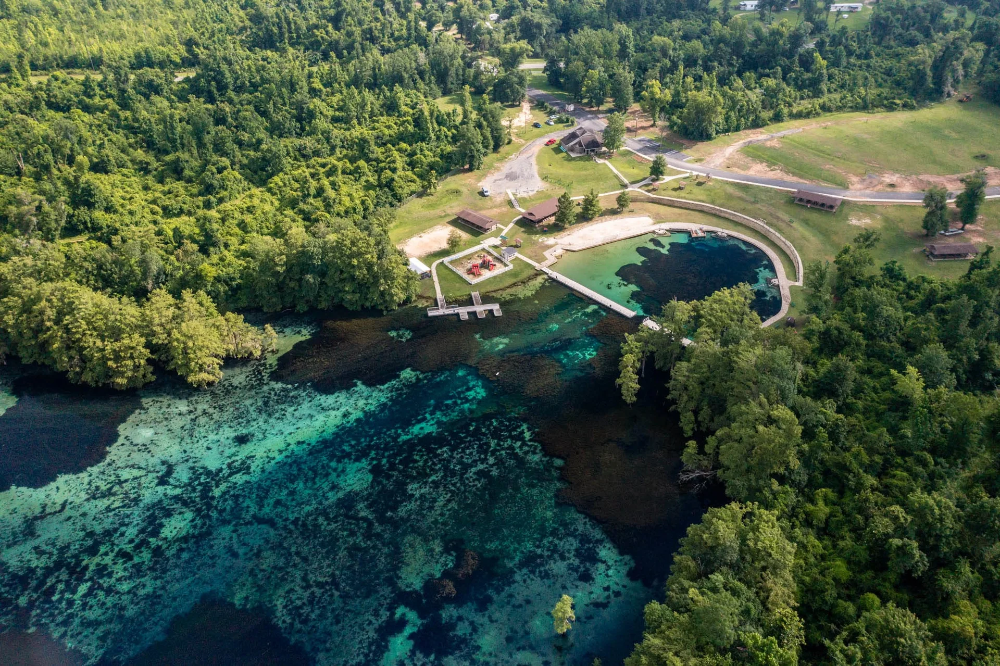
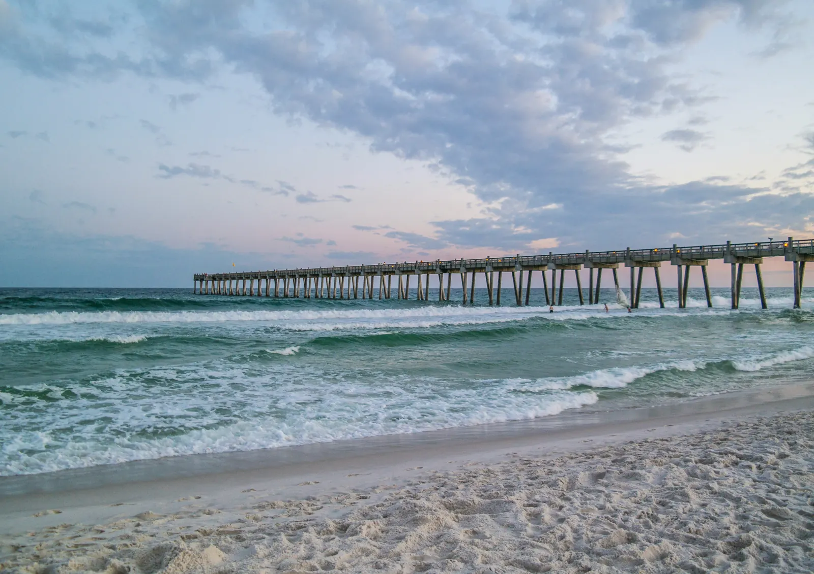
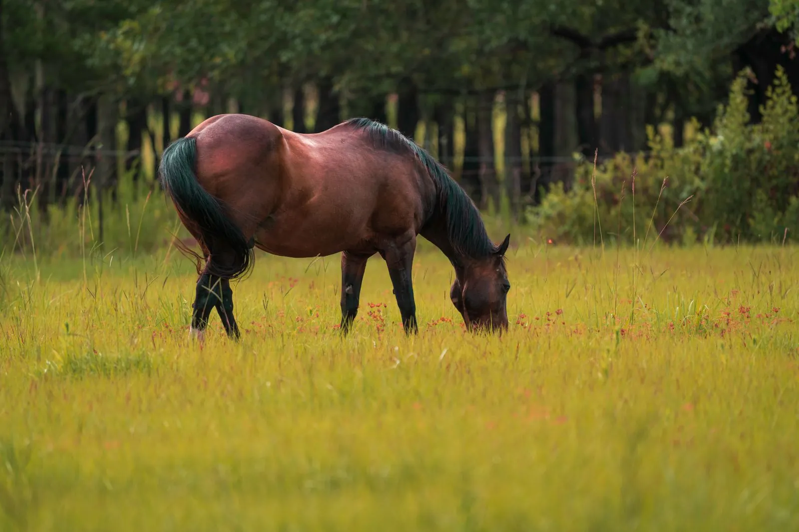
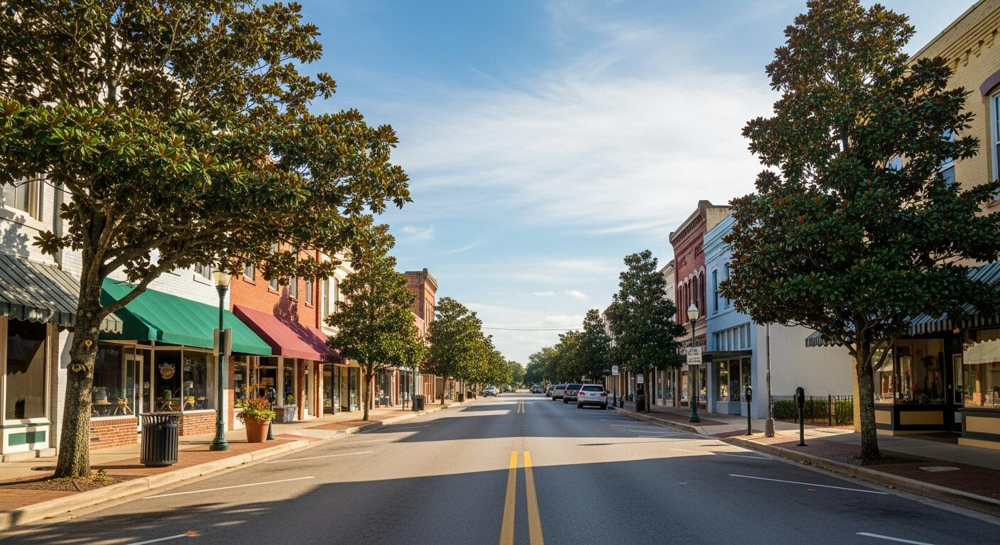

Blue Springs Ranch
10 to 17 Acre Parcels from $99,700
Every tract has its own story
No two parcels at Blue Springs Ranch are exactly alike. Some are completely wooded, with mature timber, natural shade, and endless possibilities for trails, hunting, or complete privacy. Others feature wide-open pasture, level ground, and the perfect setting for horses or your future parcel.
Many offer the best of both worlds — beautiful hardwoods in the back with open pasture up front, allowing you to build exactly where the view feels right. With most tracts spanning approximately 10 acres, and select parcels ranging from 11 to 17 acres, you'll have space to create something truly your own.

Blue Springs RanchRecreation right outside your gate
Only one mile away sits the crystal-clear waters of Blue Springs Recreation Area. Spend weekends enjoying:
- Swimming
- Kayaking
- Paddleboarding
- Freshwater scuba diving
- Family picnics
- Scenic hiking
It's one of North Florida's most beautiful natural attractions — and practically your neighbor.

Beaches within reach
When you're ready for the coast, some of Florida's most famous beaches are only about an hour away. Spend the morning on sugar-white sand along Panama City Beach or Destin, then return home that evening to the quiet privacy of your own acreage.
It's a lifestyle few places can offer.


Blue Springs Ranch- Approximately 10–17 acres
- Road frontage
- Easy year-round access
- Lots of space for a private, scenic, winding driveway
- Flexible homesite positioning
- Room for barns, workshops, gardens, recreational activities, and so much more
Build your property your way
Whether your vision is a secluded cabin tucked beneath the pines or a custom home overlooking open pasture, Blue Springs Ranch gives you the freedom to build your property your way.
A location that's only getting better
Blue Springs Ranch offers peaceful country living without sacrificing convenience. Just 10 minutes from Marianna, Florida, you'll find:
- Restaurants
- Grocery stores
- Shopping
- Medical care
- Schools
- Everyday conveniences
As Marianna continues to grow, land this close to town becomes increasingly valuable.

Nature was here first
One of the greatest qualities of Blue Springs Ranch isn't what has been built — it's what has been preserved. Whitetail deer move quietly through the woods. Wild turkey roam the property. Fox squirrels, hawks, and native wildlife have called this land home for generations.
Owning ten or more acres means having room to enjoy nature without taking it away. Here, privacy and wildlife exist together.
Fits many different lifestyles
Whether you're buying for today, tomorrow, or the next generation, this is property designed to hold its value for years to come. Blue Springs Ranch is perfect for:
- Custom homes
- Family ranches
- Horse properties
- Recreational retreats
- Hunting land
- Wildlife preserves
- Weekend escapes
- Long-term land investment
Clear information. No surprises.
Just a straightforward path to land ownership. Every property at Blue Springs Ranch includes professional guidance from reservation through closing.
- Professionally surveyed boundaries
- Title work completed
- Warranty deed
- Road frontage
- Financing assistance available
- Professional guidance from reservation through closing
See Blue Springs Ranch
Browse the land at Blue Springs Ranch and the Blue Springs Recreation Area just a mile down the road — swimming, kayaking, paddleboarding, scuba diving, and more.
Large-acreage parcels. Natural beauty. Exceptional location.
Come walk it. Contact us today to reserve your time slot.
Request More Information